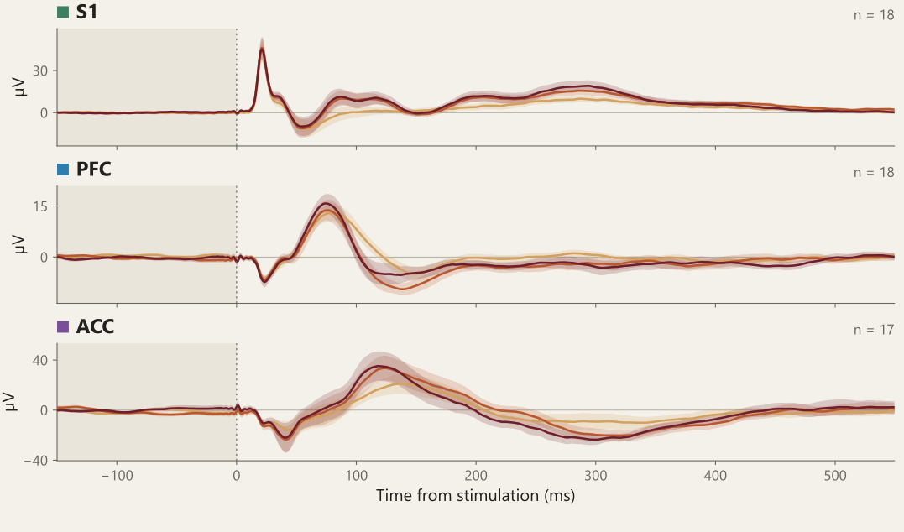
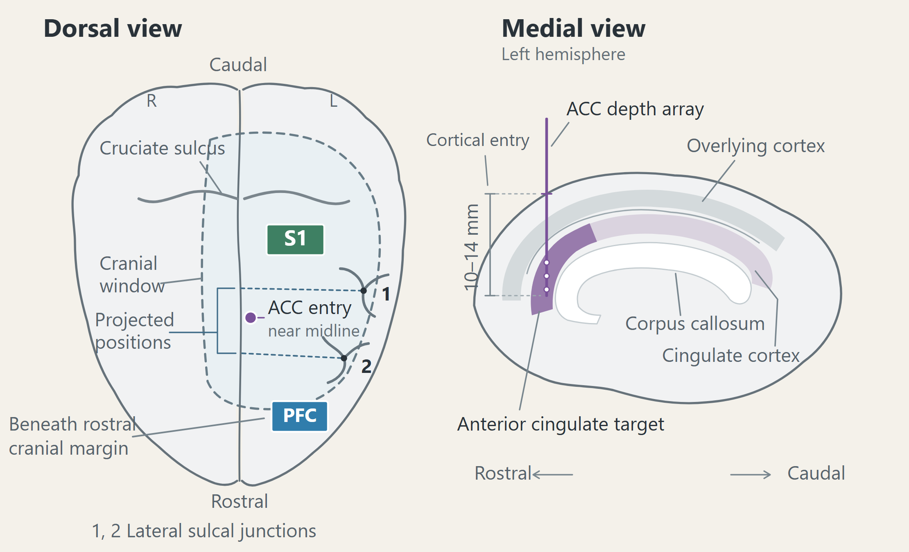
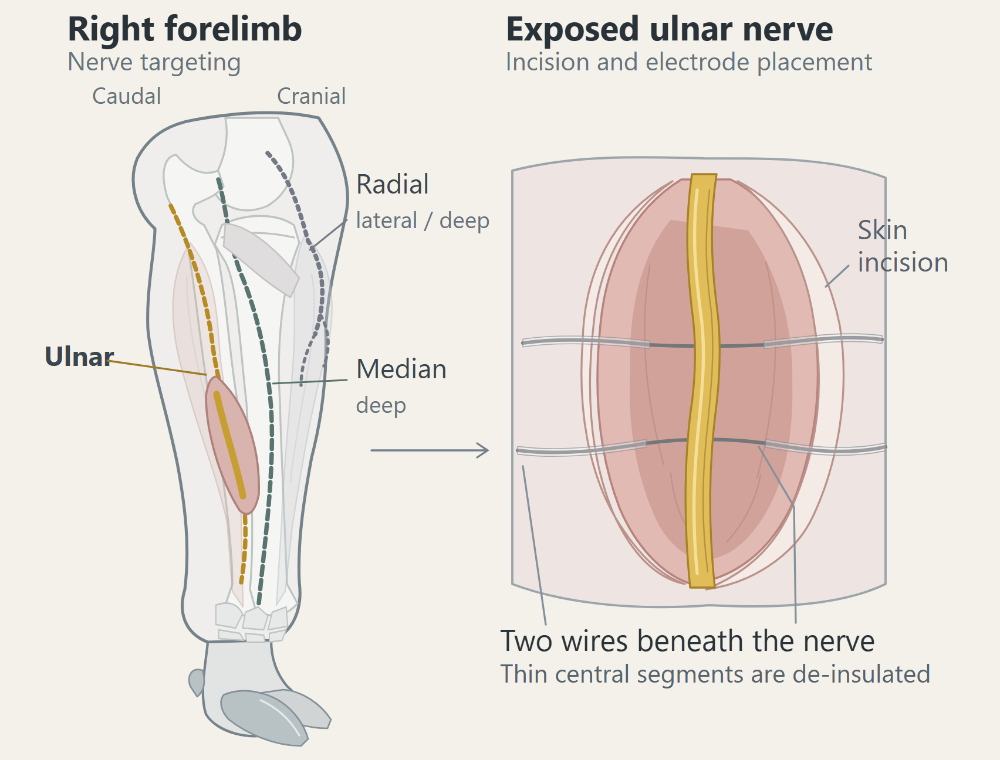
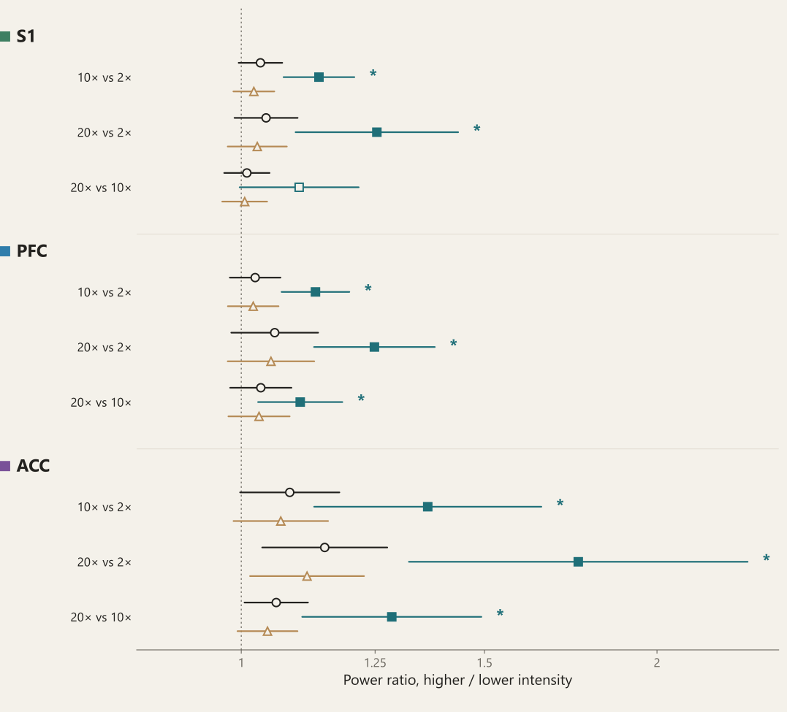
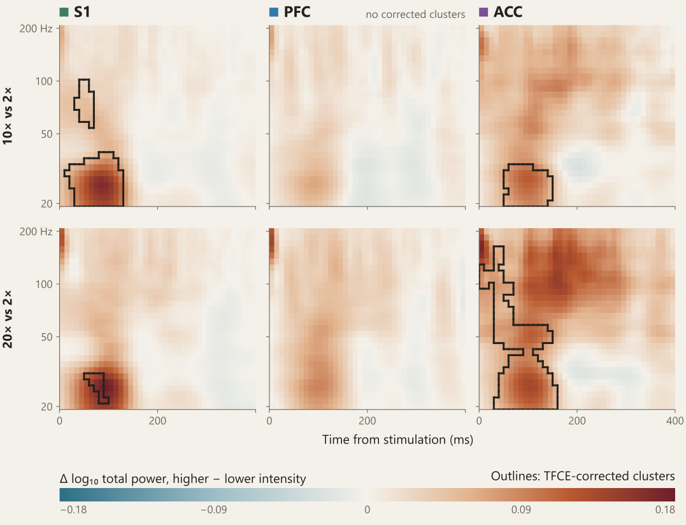

Waveforms
All three regions showed a stimulation-locked response
2× MT10× MT20× MT

IASP 2026 World Congress on Pain · Bangkok · Poster 105 (abstract 10418) · Thursday 29 October 2026
We recorded from the primary somatosensory cortex (S1), prefrontal cortex (PFC) and anterior cingulate cortex (ACC) simultaneously in 18 anaesthetised pigs while stimulating the ulnar nerve at 2, 10 and 20 times motor threshold. Graded stimulation increased phase-locked (evoked) power in all three regions, and corrected time–frequency maps localised early total-power differences in S1 and ACC.
Research questions
Methods
Eighteen female Danish Landrace pigs were anaesthetised with propofol and fentanyl. Micro-ECoG arrays (surface electrode grids) were placed on S1 and PFC, and a depth array was introduced towards the ACC (17 animals after quality control). The right ulnar nerve was stimulated with biphasic pulses at 2×, 10× and 20× motor threshold (MT) in ascending order to avoid carry-over from stronger stimulation, with stimulus onsets jittered by ±250 ms (154 sequences, each a run at all three intensities). Power at 35–120 Hz over 0–400 ms was compared between intensities with mixed models (animal random effects, Holm correction), and 20–200 Hz time–frequency maps with threshold-free cluster enhancement (TFCE).

B
Waveforms
2× MT10× MT20× MT

Power components
At 20× MT, evoked power was 1.25 times the 2× MT value in S1 and PFC and 1.75 times in ACC; all six 10× and 20× vs 2× contrasts had Holm P ≤ 0.005. Evoked power was also higher at 20× than at 10× MT in PFC and ACC. No total- or induced-power contrast survived correction.

One dot per animal: its power ratio between the two intensities (higher ÷ lower), averaged over its stimulation sequences, with a line joining the same animal across total, evoked and induced power. Squares with lines are the model estimates and confidence intervals of Fig. 3, filled where significant. Hover over or click an animal to see its own waveforms; ratios above 3 are drawn as triangles at the top.
Time–frequency maps
Four of the nine total-power maps survived correction: 10× and 20× vs 2× MT in S1 and ACC. Differences were largest at 20–30 Hz, 85–105 ms after stimulation; at 20× vs 2× MT the ACC cluster extended to about 160 Hz. No map survived in PFC or for 20× vs 10× MT.

Correlations
At 20× vs 2× MT, total and induced changes correlated at ρ ≥ 0.94 within every region, and evoked changes co-varied between regions (ρ 0.45–0.62). A steeper PFC or ACC exponent went with smaller power changes (blue; ρ −0.3 to −0.8).
Each cell: how two measures’ changes between the intensities co-vary across the 17 animals with data in all three regions (Spearman ρ, a rank correlation); the diagonal is each measure with itself. Hover over or click a cell to see the animals behind it. Evoked fraction: evoked ÷ total power; exponent and offset: slope and level of the background spectrum; aperiodic-adjusted power: 35–120 Hz power above it.
Conclusions
Cortical measures of nociception should therefore state their response component and recording site. Recorded under general anaesthesia, these responses capture cortical nociceptive processing. Electrical nerve stimulation bypasses peripheral receptors, so responses to natural noxious stimuli may differ; all animals were female, so sex differences could not be assessed.